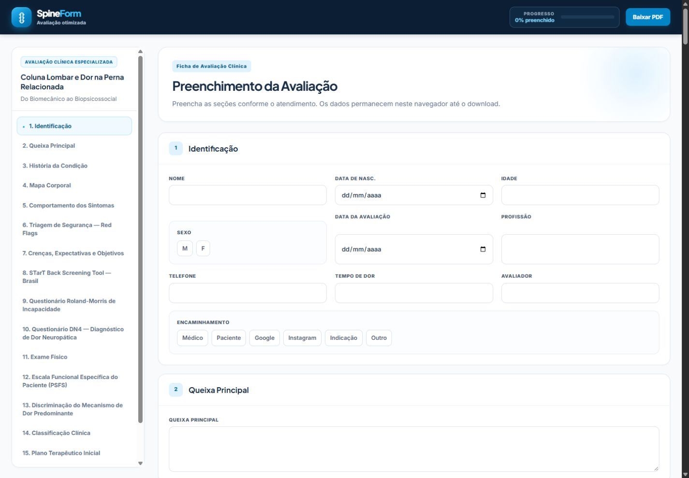
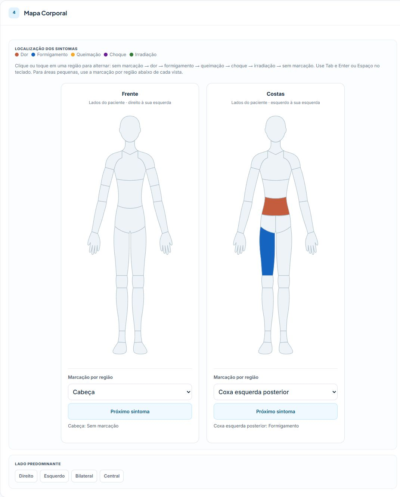

Anotações dispersas
Histórico em um lugar, exame físico em outro e escalas em folhas separadas dificultam a consulta das informações.
Ficha de avaliação clínica online
Reúna histórico, mapa corporal, escalas clínicas e exame físico em uma ficha online. Preencha diretamente no navegador e gere um PDF com as informações da avaliação.
O atendimento pede organização
Quando as informações ficam espalhadas, o registro compete com a escuta. Uma estrutura clara ajuda a conduzir a avaliação e a documentar o que importa.
Histórico em um lugar, exame físico em outro e escalas em folhas separadas dificultam a consulta das informações.
Alternar entre materiais e procurar campos para registrar cada etapa pode tornar o atendimento menos fluido.
Sem uma sequência de avaliação, fica mais difícil revisar os achados e consultar o registro em atendimentos posteriores.
Conheça o SpineForm
O SpineForm é uma ficha de avaliação clínica online para fisioterapia de coluna. Reúne informações do paciente, histórico, sintomas, escalas e exame físico em seções organizadas.
Abra no computador, tablet, iPad ou celular, preencha durante a avaliação e gere o PDF ao final. Tudo diretamente pelo navegador.
Veja o que existe na fichaIdentificação, queixa e histórico.
Mapa corporal, escalas e exame físico.
Plano terapêutico e geração de PDF.
Por dentro do produto
Informações do paciente, recursos de avaliação e documentação reunidos em uma ficha por seções.

Preencha no navegador. Gere o PDF ao final.
O que tem na ficha
Uma estrutura que acompanha a avaliação, da identificação ao plano terapêutico.
Identificação do paciente, queixa principal e histórico para contextualizar o atendimento.
Mapa corporal interativo e registro do comportamento dos sintomas para organizar o relato do paciente.
Seções para o registro de sinais de alerta e preenchimento do questionário STarT Back.
Roland-Morris, DN4 e PSFS reunidos na ficha para apoiar o registro da avaliação.
Campos de exame físico, mecanismos de dor e Classificação Internacional de Funcionalidade.
Organização do plano terapêutico e referências bibliográficas para consulta.

Mapa corporal interativo
Marque diferentes regiões do corpo e tipos de sintomas durante a avaliação. Um recurso visual para complementar a descrição do paciente e organizar o registro na ficha.
Recursos que fazem diferença
Preencha as informações diretamente na ficha pelo navegador.
Interface responsiva para computador, tablet, iPad e celular.
Acrescente um registro visual das regiões e dos sintomas relatados.
Encontre os questionários clínicos dentro da sequência de avaliação.
Gere o PDF com os dados preenchidos para documentar o atendimento.
Abra a aplicação no navegador usando o link recebido no material de acesso.
Para quem é
O SpineForm foi pensado para profissionais que querem preencher a avaliação de coluna online e gerar um PDF com os dados organizados.
Que desejam estruturar a avaliação clínica de coluna.
Que utilizam histórico, escalas e exame físico no atendimento.
Que busca preencher e documentar a avaliação digitalmente.
Que prefere levar a ficha na tela durante a consulta.
Como funciona
Confira o valor do SpineForm: À definir.
Após a compra, você recebe um PDF com instruções e o link de acesso.
Acesse a ficha no computador, tablet, iPad ou celular.
Preencha as seções e utilize os recursos da ficha durante o atendimento.
Ao final, gere o documento com os dados preenchidos.
O PDF recebido na compra contém o acesso à ficha online. O PDF da avaliação é gerado por você, após o preenchimento.
SpineForm · Preço
Uma ficha digital para organizar o atendimento.
Preencha online e gere o PDF ao final.
valor do SpineForm
Após a compra, você recebe um material digital em PDF com instruções e o link de acesso ao SpineForm. O preenchimento acontece na aplicação web, sem instalação, cadastro ou login. Ao final, você pode gerar um PDF com a avaliação preenchida.
Compra disponível em breve.
Perguntas frequentes
O essencial sobre o acesso e o uso do SpineForm.
Não. O SpineForm funciona diretamente pelo navegador, sem necessidade de instalar um aplicativo.
Sim. A interface é responsiva para computador, tablet, iPad e celular.
Sim. Após preencher a ficha na aplicação web, você pode gerar um PDF que apresenta as informações da avaliação de forma organizada.
Após a compra, você recebe um material digital em PDF com instruções e o link para acessar o SpineForm. Você preenche a ficha na aplicação web, diretamente pelo navegador, e pode gerar o PDF da avaliação ao final.
Preço: À definir. Consulte as condições de compra no checkout quando estiver disponível.
Ao terminar o preenchimento, gere o PDF com as informações da avaliação e guarde esse arquivo para consulta posterior. O SpineForm não armazena dados de pacientes em um servidor.
Avaliação otimizada
Preencha a ficha online e gere um PDF organizado
com as informações da sua avaliação.